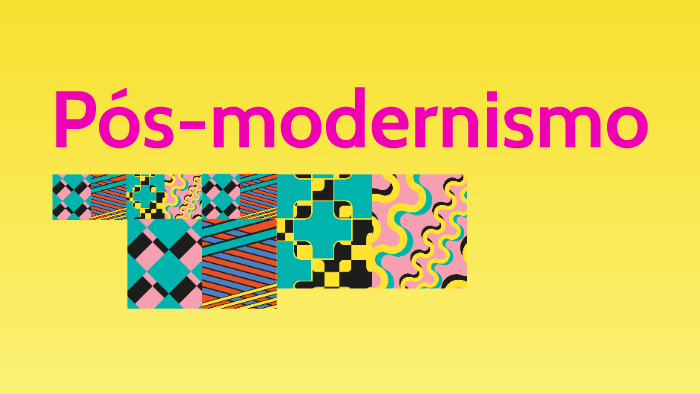

Boas-vindas ao Pós modernismo digital
 Quero conhecer!O que foi o Pós modernismo digital?
Sabe aquele jeito certinho e super organizado de ver o mundo, típico das ideias antigas de progresso, razão e verdade absoluta? Então, o Pós-Modernismo veio justamente pra questionar tudo isso. Ele não acredita muito em verdades fixas, gosta de misturar estilos, brincar com ironia e provocar, É como se dissesse: “não existe só uma forma de ver o mundo, tá tudo meio bagunçado mesmo, e tá tudo bem”. Na arte, na literatura, na arquitetura... a galera começou a misturar coisas antigas com novas, usar o exagero, fazer paródia. A ideia de “original” também começou a ser repensada — tipo, será que algo é realmente novo ou tudo é uma reinterpretação? Agora, quando a gente entra na era digital, tudo isso ganha outra cara: é o que muita gente chama de Pós-Modernismo Digital. Basicamente, é como essas ideias pós-modernas se adaptam ao mundo da internet, dos celulares, das redes sociais. Hoje em dia, tudo é fragmentado. A gente vê informação por pedaços, vídeos curtos, memes, paródias, misturas de estilos e formatos. Um meme, por exemplo, é quase um símbolo disso: ele é rápido, irônico, tem múltiplos significados e geralmente é uma releitura de algo que já existia. Além disso, a gente vive num mundo onde tá cada vez mais difícil separar o que é real do que é montado. As redes sociais mostram recortes das vidas das pessoas, filtros mudam tudo, avatares substituem gente real... é o simulacro na prática. No fundo, o Pós-Modernismo Digital é essa mistura de tudo, com um toque de caos, onde nada precisa fazer sentido o tempo todo, e onde a criatividade se alimenta justamente dessa liberdade. sabe quando uma música famosa vira funk no TikTok, isso mostra bem o Pós-Modernismo Digital. A galera pega uma coisa que já existe, muda o ritmo, corta, mistura, e transforma em algo novo — às vezes até mais famoso que o original. Isso é típico do pós-modernismo: não existe mais certo ou errado, tudo pode ser remixado. A ideia de original perde força, e o importante é a nova versão, que viraliza, diverte e conecta com o público. .